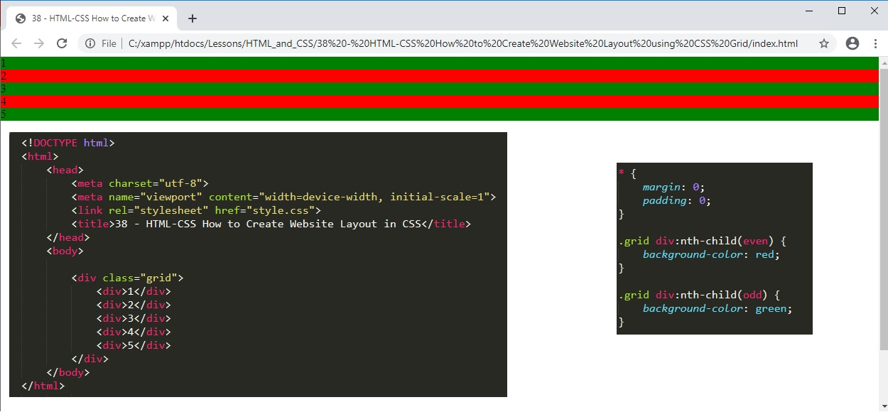
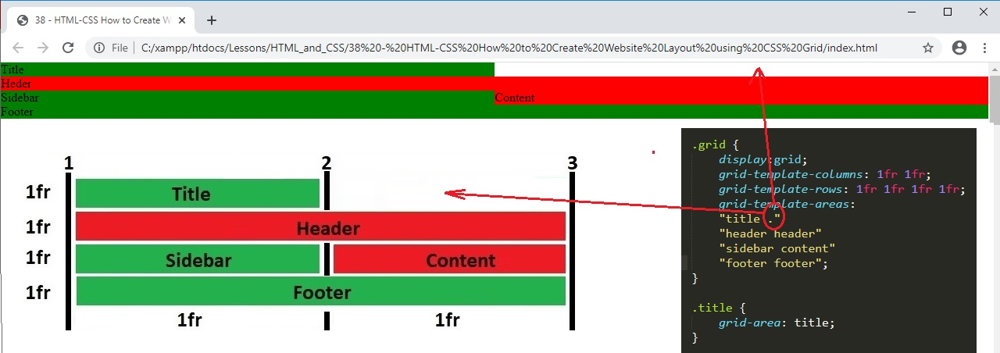

Title
Content A
Content B
Content C
38 - HTML-CSS How to Create Website Layout in CSS
01. We can use float to manipulate the position of sections of our website but we cannot for example move the footer to below the header when we want this webpage displayed on a mobile device. We can only move things to the left or right in the order that they appear in the HTML document. CSS grid fixes this issue by alllowing us to build a grid on our webpage and start inserting elements from our HTML file into the grid. It is an absolute must to be have a responsive website that works on mobile, tablet and desktop devices.
02. To demonstrate CSS grid we start with a div container called grid. Inside the container we have 5 div boxes with CSS styling to alter the even and odd background colours so we can see what is happening.

03a. In the CSS code we can specify that we want to use grid layout with the display:grid code.
03b. We can specift the number of columns in the grid with the grid-template-columns: code.
03c. When it is easy to imagine column 1 spanning between line 1 and 2 and column 2 spanning between lines 2 and 3.
04. We also have various measurements to set the (column) fraction widths.
05. We call the div boxes inside the grid "grid items" and we can decide how much space they should take up inside our grid. In this example we have renamed the div items and given them a class. We can specify where these grid items start and end. For this example we have the title spanning the whole width of the page from line 1 to line 3.
05a. We can write this as two lines of code or as one specifying the first and last line seperated by a slash.
05b. We can write this as two lines of code or as one specifying that the column ends spanning two fractions.
06. In the same way that we can modify the columns that a grid item occupies we can also modify the rows. In this example the grid item title spans 1 column and ends at row 2.
07. There is a much easier way of doing this without using columns and rows. This is called grid area.
07a. We define first the number of columns and rows using grid-template-columns and grid-template-rows.
07b. We next give a grid-area name to each class.
07c. Lastly we drop each class into the grid area with grid-template-areas code line. Note that the last line of the code has the semi-colon.
08. We can also add in a blank space or white space using a dot in the grid-template-areas.

09. At the moment the website spans the whole width of the page but we can also add a wrapper using CSS grid.
09. We can also set the width of each grid item so that the it does not occupy the whole width of the grid column but only what it needs. We can see that with a justify-self: start; will justify to the left so the grid box is only as wide as the content. Equally we can use justify-self: end; to justify right. Also available is justify-self: center;
09a. To centre content vertically in the css grid we can use align-self: Start, end or center;
11. Nested items. Below we have an example of nested items in the HTML file. We can see that the row height adjusts for the nested items but it also adjusts all the other row heights to be the same.
12. We can put the nested items in another grid withing the content box.
13. Mobile responsiveness.
13. grid-gap allows us to ad spacing round the grid items. I have added it to the mobile version as we want it both on the mobile and desktop version. Note that on the CSS code for the desktop version I only need to code what changes when the screen size is greater than 736px.